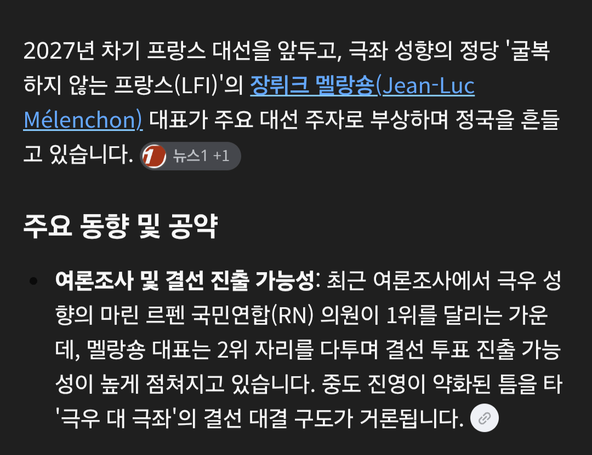

국가 부도 내자는 새끼가 차기 대선 유력후보임 ㅋㅋㅋㅋㅋ
국가 부도 내면 어떤 취급 받는지를 모르나

국가 부도 내자는 새끼가 차기 대선 유력후보임 ㅋㅋㅋㅋㅋ
국가 부도 내면 어떤 취급 받는지를 모르나
그렇다고 EU가 프랑스를 버릴 수 있을까? 대마불사 마인드로 EU와 함께 폭사하자라면서 짤처럼 불지르고 생쑈하면 EU애들이 피눈물 흘리면서 돈 갖다 퍼줄 수 밖에 없을 거 같은데
버리면 당장 전력인프라가 무너짐
프랑스가 죽으면 부채도 사라지는거아님?? 한명에게 부채를 몰아주고 화형시키자
너 지금 기독교를 만들었어!

대속자에 이은 대속국 ㄷㄷㄷ
프랑스는 자기 급이면 내도 된다는 계산이겠지 뭐.
해가진게 아니라 왜진짜어둡냐
우리나라도 강원도의 채무불이행으로
건설경기 나락 직전이었다가 간신히 살았는데
프랑스가 배째면 유럽 전체가 나락가겠어
믿는구석은 이거지
같이 나락갈래 아니면 지갑 열래? 협박
프랑스가 배째면 우리 증시도 째질듯 ㅅㅂ
까비아깝숑
지금 시간이면 밤이라서가 아니네...
아침이구나
해맑은 청년ㅋㅋㅋㅋㅋ진짜 어둡다구욧!
미래라고 했으니까 틀린말은 아니네 ㅋㅋ
어차피 채무 불이행할거 내 채무도 좀 거기에 같이 태워주라
오...
진짜 광기
- 유 럽 짱 -
세계가 점점 고장나고있음
세계3차대전 머지않음
유럽은 외국인 이민자에게 서서히 점령당하는 엔딩일듯
중동이나 아프리카에서 넘어온사람들은 생활여건 별로인거 신경안쓰고 바퀴벌레처럼 버팀
그리고 인구수 역전하고 유럽환경도 그 정도급으로 다운 시켜놓겠지
그다음 정상적인 서구권인 미국과 갈등, 소규모 전쟁
제가 미국에 있는데 딱히 정상적인 상태는 아니라 ㅋㅋㅋ
유럽은 애초에 산업혁명으로 자국민 착취하면서 식민지 만들어서 남의나라 착취하던 쓰레기 나라 연합임
인성적으로 병신 국가 연합인데 히틀러가 세탁 다해줬지
아프리카 사람들 손목잘라가고 인간동물원 만들던 새끼들이 어디가겠냐 ㅋㅋㅋㅋㅋㅋㅋㅋㅋ
애초에 이민자 만든게 식민지로 씹창내놓은 결과물이라는게 크고,
재네가 아무 이득없이 이민자 받았겠음?? 지금도 물가 개 터져나가는데 이민자 없었으면 엥겔지수 감당 못할걸
오 디폴트
이제 커뮤니티에서 유럽식 복지 빨던 사람들 전멸함.
아직도 oecd만큼 복지에 돈을 안쓴다 헛소리하는 놈들 꽤 있음 ㅋㅋ 쓴놈들 최후가 저꼬라진데
프랑스가 저지경 된대에는 법인세 감축과 연금 수령연령 올림, 복지에 쓰던 예산 다 땡겨서 국방예산에 꼴박해서 공교육 씹창나서 들고 일어선건데
이걸 이렇게 호도한다고??
한국 ㄹㅇ 정치선진국이네
한국에서 이미 해본거 전세계에서 따라하노ㅋㅋㅋ
프랑스 절대 안 망할거같은데 그냥 지금 당장 분위기가 험악하니까 프랑스 망할거같다고 물타기 하는거지 저 강대국이 크게 엎어질리 절대 없다고 봄
이제 곧 밤임 ㅇㄷ?
맞아. 저녁이라서 그래
상식이 있던 시대가 완전히 끝났구나
레볼루숑 다음은 멜랑숑임? ㅋㅋㅋㅋㅋ
유럽의 환자